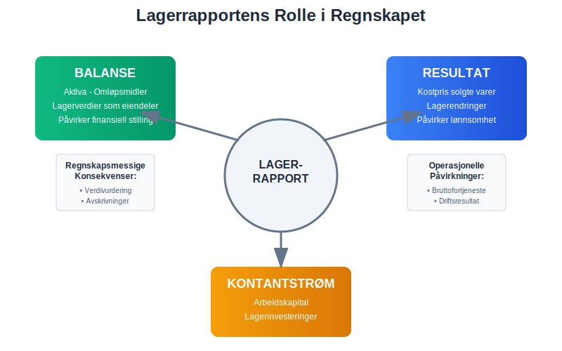
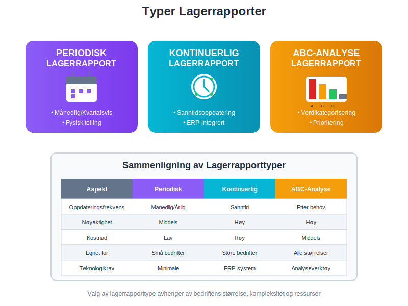
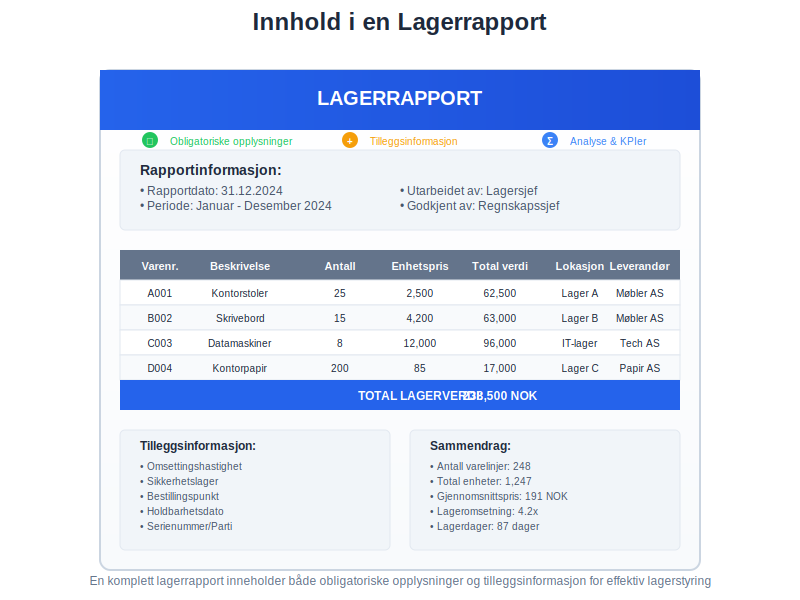
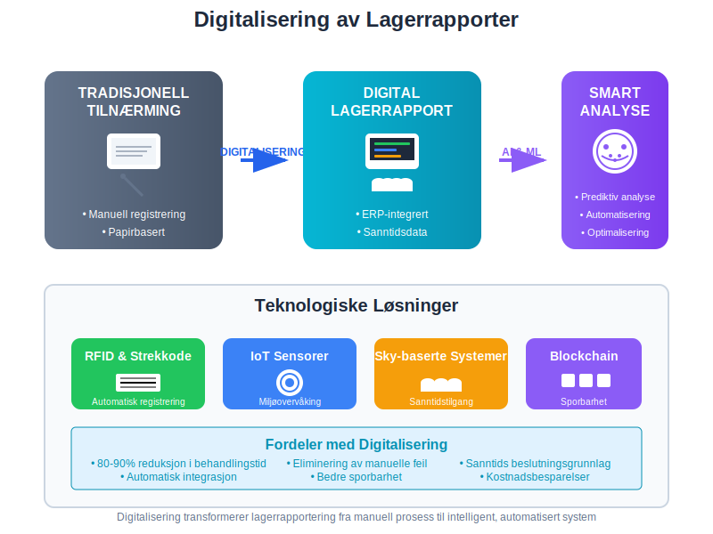
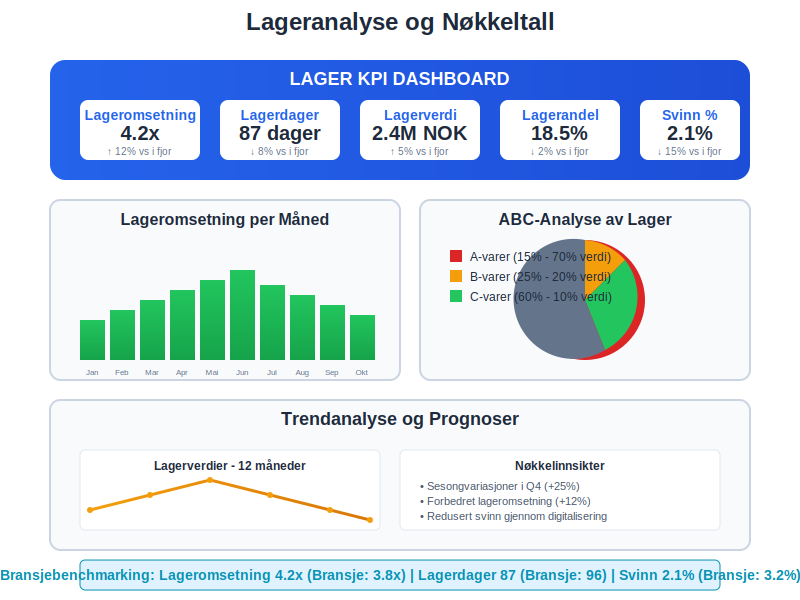

En lagerrapport er et systematisk dokument som gir en detaljert oversikt over bedriftens lagerbeholdning på et gitt tidspunkt. Den fungerer som et kritisk verktøy for lagerstyring, regnskapsføring og verdivurdering av varelager. Lagerrapporter er essensielle for å oppfylle bokføringslovens krav til dokumentasjon og for å sikre nøyaktig beregning av kostpris og bruttofortjeneste.
Seksjon 1: Lagerrapportens Rolle i Regnskapet
Lagerrapporter spiller en fundamental rolle i bedriftens finansregnskap og driftsregnskap. De påvirker direkte beregningen av driftskostnader og driftsinntekter, og er avgjørende for korrekt beregning av driftsresultat.

Regnskapsmessige Konsekvenser
Lagerrapporter påvirker flere kritiske områder i regnskapet:
- Balanse: Lagerverdien føres som omløpsmidler under aktiva
- Resultatregnskap: Endringer i lagerbeholdning påvirker kostnadene direkte
- Kontantstrøm: Lagerinvesteringer påvirker bedriftens arbeidskapital
Seksjon 2: Typer Lagerrapporter
Det finnes flere typer lagerrapporter som tjener ulike formål i bedriftens drift og regnskapsføring. Valg av rapporttype avhenger av bedriftens størrelse, bransje og spesifikke behov for lagerstyring.

2.1 Periodisk Lagerrapport
Den periodiske lagerrapporten utarbeides på faste tidspunkter, typisk månedlig, kvartalsvis eller årlig. Denne typen rapport krever fysisk lagertelling for å verifisere beholdningen.
| Frekvens | Formål | Egnet for |
|---|---|---|
| Årlig | Årsregnskap og revisjon | Små bedrifter med enkelt lager |
| Kvartalsvis | Kvartalsrapportering | Mellomstore bedrifter |
| Månedlig | Månedlig regnskapsavslutning | Større bedrifter med aktivt lager |
| Ukentlig | Operasjonell lagerstyring | Bedrifter med høy lageromsetning |
2.2 Kontinuerlig Lagerrapport (Perpetual Inventory)
Kontinuerlige lagerrapporter oppdateres i sanntid hver gang det skjer bevegelser i lageret. Dette systemet krever integrerte ERP-systemer som automatisk registrerer alle inn- og utgående varer. Moderne løsninger benytter ofte strekkoder for å sikre nøyaktig og effektiv dataregistrering i sanntid.
Fordeler med Kontinuerlig Lagerrapportering:
- Sanntidsdata: Alltid oppdatert lagerstatus
- Bedre kontroll: Umiddelbar oppdagelse av avvik
- Effektiv planlegging: Automatiske bestillinger ved lavt lager
- Redusert svinn: Raskere identifikasjon av tap og tyveri
2.3 ABC-Analyse Lagerrapport
ABC-analysen kategoriserer lagervarer basert på deres verdi og viktighet for bedriften. Denne metoden hjelper bedrifter med å prioritere ressurser og oppmerksomhet på de mest kritiske varene.
| Kategori | Andel av varer | Andel av verdi | Kontrollnivå |
|---|---|---|---|
| A-varer | 10-20% | 70-80% | Høy - daglig oppfølging |
| B-varer | 20-30% | 15-25% | Middels - ukentlig oppfølging |
| C-varer | 50-70% | 5-10% | Lav - månedlig oppfølging |
Seksjon 3: Innhold i en Lagerrapport
En komplett lagerrapport må inneholde spesifikk informasjon for å være nyttig for både regnskapsføring og operasjonell lagerstyring. Innholdet må være strukturert og lett å forstå for ulike interessenter.

Obligatoriske Opplysninger
Hver lagerrapport bør inneholde følgende grunnleggende informasjon:
- Rapportdato og -periode: Når rapporten er utarbeidet og hvilken periode den dekker
- Varenummer og beskrivelse: Unik identifikasjon av hver vare
- Antall på lager: Fysisk beholdning per vare
- Enhetspris: Anskaffelseskost eller gjeldende markedsverdi
- Total verdi: Antall multiplisert med enhetspris
- Lokasjon: Hvor varene er lagret - se lagerlokasjonsstyring for effektiv sporing
- Leverandørinformasjon: Hvem som har levert varene
Tilleggsinformasjon for Avansert Lagerstyring
For bedrifter med komplekse lagerbehov kan rapporten også inneholde:
- Omsettingshastighet: Hvor raskt varer selges
- Sikkerhetslager: Minimum beholdning som må opprettholdes
- Bestillingspunkt: Når nye varer må bestilles
- Holdbarhetsdato: For bedervelige varer
- Serienummer/partinummer: For sporbarhet
Seksjon 4: Verdivurdering i Lagerrapporter
Verdivurdering av lageret er en kritisk komponent som påvirker bedriftens formue og resultat. Det finnes flere metoder for å verdsette lagerbeholdningen, og valg av metode kan ha betydelige regnskapsmessige konsekvenser.
Vanlige Verdivurderingsmetoder
FIFO (First In, First Out)
FIFO-metoden antar at de eldste varene selges først. Dette er den mest brukte metoden i Norge og gir ofte det mest realistiske bildet av lagerverdien.
LIFO (Last In, First Out)
LIFO-metoden antar at de nyeste varene selges først. Denne metoden er ikke tillatt etter norsk regnskapslovgivning.
Vektet gjennomsnitt
Gjennomsnittsmetoden beregner en gjennomsnittlig kostpris for alle varer av samme type.
| Metode | Fordeler | Ulemper | Tillatt i Norge |
|---|---|---|---|
| FIFO | Realistisk lagerverdi | Kan gi høyere skatt i inflasjonstider | ✓ Ja |
| LIFO | Lavere skatt i inflasjonstider | Urealistisk lagerverdi | ✗ Nei |
| Vektet gjennomsnitt | Jevner ut prissvingninger | Mindre presist | ✓ Ja |
Nedskrivning av Lager
Når lagerverdien faller under anskaffelseskost, må lageret nedskrives til virkelig verdi. Dette påvirker både balanse og resultatregnskap.
Årsaker til Nedskrivning:
- Markedsprisfall: Salgsprisen har falt under kostpris
- Foreldelse: Varer som ikke lenger kan selges
- Skade: Fysisk skade på lagervarer
- Sesongvarer: Varer som har gått ut av sesong
Seksjon 5: Digitalisering og Automatisering
Moderne lagerrapportering har blitt betydelig mer effektiv gjennom digitalisering og automatisering. Integrasjon med ERP-systemer og bruk av avanserte teknologier har revolusjonert hvordan bedrifter håndterer lagerstyring.

Teknologiske Løsninger
Strekkodescanning og RFID
Strekkodeteknologi og RFID-chips muliggjør automatisk registrering av lagerbevegelser, noe som reduserer manuelle feil og øker nøyaktigheten i lagerrapportene.
Kunstig Intelligens og Maskinlæring
AI-baserte systemer kan forutsi lagerbehov, optimalisere bestillinger og identifisere mønstre i lagerdata som mennesker kan overse.
Skybaserte Lagerløsninger
Cloud-baserte systemer gir sanntidstilgang til lagerdata fra hvor som helst, noe som er spesielt nyttig for bedrifter med flere lokasjoner.
Integrasjon med Regnskapssystemer
Moderne lagerrapporter integreres sømløst med regnskapssystemer, noe som sikrer:
- Automatisk bilagsføring: Lagerbevegelser registreres automatisk som bilag
- Sanntids bokføring: Endringer i lager reflekteres umiddelbart i regnskapet
- Automatisk avstemming: Lagerverdi avstemmes automatisk mot regnskapsdata
Seksjon 6: Juridiske Krav og Compliance
Lagerrapporter må oppfylle spesifikke juridiske krav i henhold til norsk regnskapslovgivning. Bokføringsloven og bokføringsforskriften setter klare standarder for hvordan lagerbeholdning skal dokumenteres og rapporteres.
Dokumentasjonskrav
Oppbevaringsplikt
Lagerrapporter må oppbevares i minimum 5 år etter regnskapsårets slutt, i henhold til bokføringslovens bestemmelser.
Sporbarhet
Alle lagerbevegelser må kunne spores tilbake til originale bilag og transaksjoner.
Revisjonssti
Det må finnes en klar revisjonssti som viser hvordan lagerverdier er beregnet og dokumentert.
Krav til Lagertelling
Fysisk lagertelling må gjennomføres minimum én gang årlig for å verifisere rapporterte lagerverdier. Denne tellingen må:
- Utføres av uavhengige personer (ikke de som har daglig ansvar for lageret)
- Dokumenteres grundig med telleskjemaer og signaturer
- Avstemmes mot systemrapporter
- Forklare avvik mellom fysisk telling og systemdata
Seksjon 7: Analyse og Nøkkeltall
Lagerrapporter danner grunnlaget for viktige lageranalyser og nøkkeltall som hjelper ledelsen med å ta informerte beslutninger om lagerstyring og arbeidskapital.

Kritiske Lager-KPIer
Lageromsetning (Inventory Turnover)
Lageromsetningen måler hvor mange ganger lageret “snur” i løpet av et år:
Lageromsetning = Kostpris for solgte varer / Gjennomsnittlig lagerverdi
Lagerdager (Days in Inventory)
Lagerdager viser hvor mange dager det tar å selge gjennomsnittlig lagerbeholdning:
Lagerdager = 365 / Lageromsetning
Lagerandel av Omsetning
Lagerandelen viser hvor stor del av omsetningen som er bundet opp i lager:
Lagerandel = Lagerverdi / Årlig omsetning × 100%
Benchmarking og Bransjestandarder
| Bransje | Typisk lageromsetning | Typiske lagerdager |
|---|---|---|
| Dagligvarer | 12-20 ganger | 18-30 dager |
| Klær og tekstiler | 4-6 ganger | 60-90 dager |
| Elektronikk | 6-12 ganger | 30-60 dager |
| Biler og deler | 3-5 ganger | 75-120 dager |
| Møbler | 2-4 ganger | 90-180 dager |
Seksjon 8: Utfordringer og Beste Praksis
Effektiv lagerrapportering krever systematisk tilnærming og kontinuerlig forbedring. Bedrifter møter ofte utfordringer knyttet til nøyaktighet, timing og ressursbruk.
Vanlige Utfordringer
Datakvalitet
Unøyaktige data er den største utfordringen for lagerrapportering. Dette kan skyldes:
- Manuelle registreringsfeil
- Manglende oppdatering av systemer
- Inkonsistente prosedyrer
- Utilstrekkelig opplæring av personale
Timing og Frekvens
Balansering mellom rapporteringsfrekvens og ressursbruk er kritisk. For hyppige rapporter kan være kostbare, mens for sjeldne rapporter kan gi utdatert informasjon.
Systemintegrasjon
Mangel på integrasjon mellom ulike systemer kan føre til datasiloer og inkonsistente rapporter.
Beste Praksis for Lagerrapportering
1. Standardiserte Prosedyrer
Utvikle klare prosedyrer for:
- Registrering av lagerbevegelser
- Gjennomføring av lagertelling
- Håndtering av avvik
- Rapportgenerering og -distribusjon
2. Regelmessig Opplæring
Sørg for kontinuerlig opplæring av personale i:
- Systembruk og prosedyrer
- Viktigheten av nøyaktig registrering
- Nye teknologier og metoder
3. Automatisering der Mulig
Automatiser rutineoppgaver som:
- Datainnsamling og -registrering
- Rapportgenerering
- Avviksidentifikasjon
- Bestillingsforslag
4. Regelmessig Gjennomgang og Forbedring
Gjennomfør periodiske evalueringer av:
- Rapportkvalitet og nøyaktighet
- Prosesseffektivitet
- Teknologiske muligheter
- Brukertilfredssthet
Seksjon 9: Fremtiden for Lagerrapportering
Lagerrapportering utvikler seg raskt med nye teknologier og endrede forretningsbehov. Digitalisering, automatisering og kunstig intelligens vil fortsette å forme hvordan bedrifter håndterer lagerstyring og -rapportering.
Emerging Technologies
Internet of Things (IoT)
IoT-sensorer kan automatisk overvåke lagerforhold som temperatur, fuktighet og bevegelse, og gi sanntidsdata om lagerstatus.
Blockchain for Sporbarhet
Blockchain-teknologi kan gi uforanderlig sporbarhet av varer gjennom hele forsyningskjeden.
Prediktiv Analyse
Maskinlæring kan forutsi lagerbehov basert på historiske data, sesongvariasjoner og markedstrender.
Bærekraft og ESG-rapportering
Moderne lagerrapporter inkluderer stadig oftere bærekraftsmålinger som:
- Karbonfotavtrykk av lagerbeholdning
- Avfallsreduksjon og resirkulering
- Etisk innkjøp og leverandørstyring
Dette er spesielt relevant i sammenheng med ESG-rapportering og CSRD-direktivet.
Lagerrapporter vil fortsette å være et fundamentalt verktøy for bedriftsstyring, men deres form og innhold vil utvikle seg for å møte nye krav til transparens, bærekraft og digital effektivitet. Bedrifter som investerer i moderne lagerrapporteringssystemer vil ha betydelige konkurransefortrinn gjennom bedre beslutningsgrunnlag og mer effektiv ressursbruk.